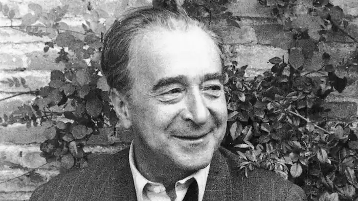

Камба Хуліо народився 16 грудня 1884, Villanueva de Arosa, провінція Понтеведра в сім'ї середнього класу: його батько був практикуючим і шкільним вчителем, а старшим братом був Франциско Камба.
У тринадцятирічному віці він втікає з дому і вирушає на борт судна, що йде до Аргентини. У Буенос-Айресі потрапляє в анархічні кола і робить свої перші літературні проби, написавши прокламації і брошури. У результаті в 1902 році його вигнали з Аргентини разом з іншими іноземними анархістами.
Повернувшись до Іспанії, починає працювати в "Газеті Понтеведра", але швидко осідає в Мадриді, де пише для анархістських видань, таких як "El Porvenir del Obrero". Через кілька місяців створює власну газету на вулиці Ла Мадера: "El Rebelde". Антоніо Аполо супроводжував і допомагав йому у цьому. З 1905 року Хуліо Камба працює журналістом в республіканській газеті "Ель-Паїс". Його праці мають різноманітну тему, і в них він показує свою незалежність. У цій газеті він залишився до 1907 року, коли почав своє завдання як парламентський журналіст у "Новій Іспанії". У своїх текстах він проявляв скептицизм і блиск, які будуть супроводжувати його протягом його кар'єри. У ті часи відбувся судовий розгляд нападу на Альфонсо XIII у день його весілля. Хуліо Камба був покликаний свідчити через його відносини з Матео Морралом. У деяких його статтях він пише про відносини, які він мав з анархістом. Його життя як кореспондента починається з 1908 року, коли Хуан Арагон включив його в штаб "La Correspondencia de España". Після чого його направляють до Туреччини. Там він висвітлює вибори та зміну режиму. Після повернення з Константинополя Хуліо Камба змінив формулювання. "El Mundo" — це газета, за допомогою якої він контактує з кореспондентами в Парижі та Лондоні. У 1912 році Хуліо почав вести рубрику Diario de un Español в "La Tribuna". Згодом він повернеться до англійської столиці і надішле свої перші хроніки з Німеччини в цю газету. У 1913 почав співпрацювати з монархічною газетою ABC. Співпраця тривала аж до його смерті, за винятком деяких перерв. Одна з них (найдовша) — це те, що змусило його стати журналістом El Sol. Він працює в цій щоденній газеті 10 років (1917—1927). Повернувшись до газети Лука де Тена, він повертається до Нью-Йорка вдруге. З цього міста він пише статтю "На захист неписьменності" — виступає проти узагальнення інструкцій для всіх іспанців. Його хроніки будуть зібрані в книзі (як і багато інших): Автоматичне місто. Під час Громадянської війни його записи (в яких він висловлював симпатії до французької сторони) публікуються в ABC (Севілья). Інша співпраця тривала два роки з газетою "Arriba" (1951-1953). У цій газеті починається переробка старих статей, які або пов'язані з сьогоденням або засновані на пам'яті автора. Ретушування і перевтілення його записів будуть звичайними з цього моменту у його працях під редакцією ABC і La Vanguardia. У 1949 році він оселився в готелі Palace в Мадриді, де прожив до самої смерті. 28 лютого 1962 року Хуліо Камба помер у результаті емболії в клініці Ковеса.